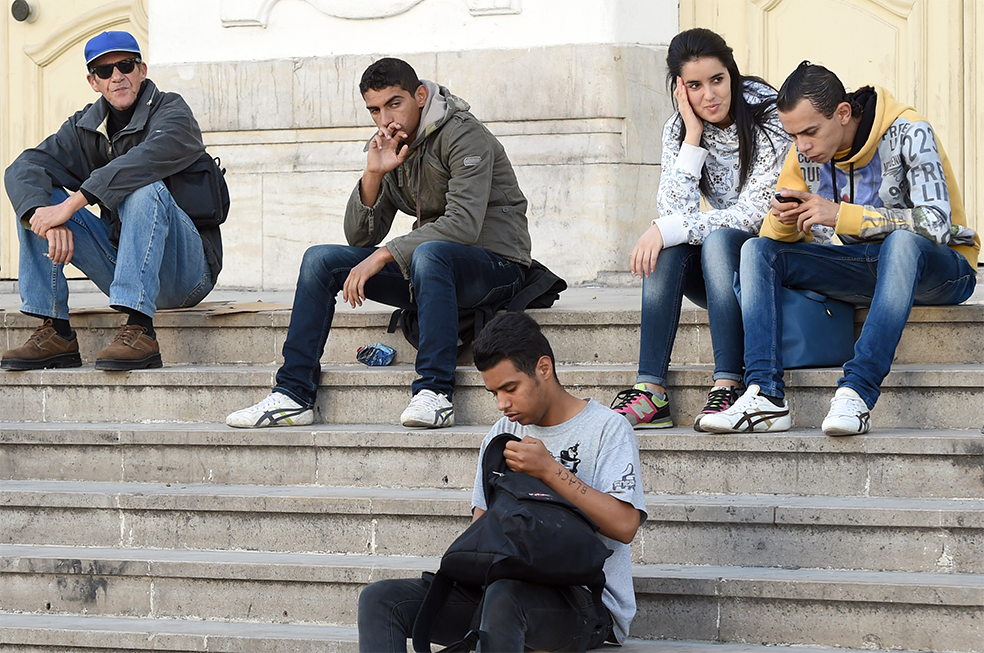

What motivates a young person to leave his or her community, take up arms, and in some cases commit brutal acts of violence is a complex question. Suggestions that Tunisian fighters are driven narrowly by radical Islamic ideology or conversely by economic woes fail to account for the diverse and highly personal combinations of motives that compel individuals to enlist in jihadi-salafi groups. Each Tunisian recruit’s case is unique, but the common motives of Tunisian fighters speak to systemic frustrations and despair broadly felt by many of their peers across North Africa, the Middle East, and beyond.
Each Tunisian recruit’s case is unique, but the common motives of Tunisian fighters speak to systemic frustrations and despair broadly felt by many of their peers across North Africa, the Middle East, and beyond.
Jihadi-salafi groups appeal to varied but largely personal and emotional motivations of economic gain, power, status, adventure, and redemption or reinvention. Communal factors tied to notions of religion and justice also serve as motivation or rationale for enlistment. More recently, the establishment of the Islamic State group (ISG) has introduced a new and increasingly salient religious incentive in the opportunity—or duty, as the group frames it—to help build a new Muslim society and state as embodied by the caliphate.
The common theme uniting these motives is a search for purpose and escape from a recruit’s current context, as well as a desire to radically transform a person’s current predicament of the individual recruit or that of the broader Muslim community. The following analysis examines these drivers and contexts within Tunisia’s specific experiences, but the push and pull factors that impel Tunisians to join jihadi groups echo those driving jihadi-salafi recruitment from other parts of the world.
Many Tunisian recruits are attracted to the religious messages of righteousness and duty espoused by jihadi-salafi groups like al Qaeda and the Islamic State group. The appeal of jihadi-salafi ideology is strong in part because of its simplicity. This simplicity makes it widely accessible and provides a clear set of strictures for daily behavior and broader communal activity. Not only does it advocate a puritanical interpretation of religion and behavior that claims authenticity, but it also allows adherents into the fold without requiring rigorous study or deep textual knowledge. In Tunisia and the Maghreb more broadly, salafism and jihadi-salafism are avenues for rebellion against the old political, social, and religious order.
In Tunisia and the Maghreb more broadly, salafism and jihadi-salafism are avenues for rebellion against the old political, social, and religious order.
Jihadi-salafists frame their violence and the fights against the Assad regime, against the West, and against pro-Western Arab governments as a religious imperative or defensive jihad to protect Muslims. According to Islamic scholarship on jihad from the Middle Ages, defensive jihad becomes an individual imperative for able Muslims. Jihadi-salafists also justify their actions through takfir, which is used to declare Muslims to be apostates, thereby sanctioning violence against a host of government and civilian targets.
This stance defies the previously prevailing tradition in salafism of advocating obedience to Muslim political rulers and discouraging rebellion, which would subvert unity among the Muslim community. Finally, after the Islamic State group declared the establishment of the caliphate in mid-2014, the prospect of living in a society governed by shari’a law was a draw for some religiously-motivated recruits who view Islamic divine law to be the purest application of justice. While much Western analysis depicts jihadi-salafists as nihilistic, many recruits see themselves as building a new Muslim society that is an authentic link to the first Muslim generations.
Many young Tunisians were stirred to join rebel and jihadi-salafi groups in Syria by scenes of human suffering and civilian deaths. Those who join to defend Muslims see themselves as pursuing a noble aim. In the early years of the Syrian conflict, some Tunisians also viewed joining the fight in Syria as continuing the spirit of the Arab uprisings rather than as participating in a global jihadi-salafi project.
In the early years of the Syrian conflict, some Tunisians also viewed joining the fight in Syria as an extension ofcontinuing the spirit of the Arab uprisings rather than as participating in aa global jihadi-salafi project.
Although these views are not mutually exclusive, the narrative that the Syrian fight stemmed from the same quest for social justice that drove Tunisia’s own revolution provided a justification for the actions of some foreign fighters. Although most Tunisian recruits traveling to Syria before 2014 joined al Qaeda’s jihadi-salafi affiliate there, Jabhat al-Nusra, others enlisted with mainstream Islamist or secular groups, including the Free Syrian Army. This pattern was more common before the rise of the Islamic State group in 2014, but the notion of defending Muslims was not always wrapped in a religious imperative, especially in the first few years after the Arab uprisings.
Tunisia’s economic inequalities and endemic youth unemployment play a role in radicalizing some individuals, but not all recruits are unemployed or driven by economic gain. High expectations among many young Tunisians that the revolution would create economic opportunities or at least distribute wealth more equitably have given way to frustration and anger. The national unemployment rate of around 15 percent climbs to double that figure or higher among youth, university graduates, and those in rural areas.
According to the World Bank, one in three young men in rural areas is not employed or enrolled in school or training, while one in five young urban men is idle. On average, college graduates wait six years before finding work. Meanwhile, the work to be had is often in low-skilled, low-wage jobs, or in precarious situations in Tunisia’s sprawling informal economy, which according to some estimates accounts for half the country’s total economic output.
High expectations among many young Tunisians that the revolution would create economic opportunities and at least distribute wealth more equitably have given way to frustration and anger.
Those Tunisian recruits who are motivated by money are drawn to monthly salaries and stipends paid by the al Qaeda–linked groups as well as the Islamic State group. Jihadi-salafi groups, especially in 2014–15, reportedly paid salaries in addition to providing food, clothing, and housing. Some recruits, especially those that play logistical or auxiliary support roles in Libya, may also be “part-timers” looking to supplement their incomes rather than derive their livelihoods from working for a jihadi-salafi group.
Joining a jihadi-salafi group can give someone power, status, and opportunities to which he or she may never have access in “normal” life. Without family connections, many young Tunisians are resigned to working and living in subsistence-level jobs or in the informal economy with little opportunity to rise in socioeconomic status and achievement. For some recruits, joining radical groups gives them an opportunity to rise through the ranks of an organization and society based on their capabilities and achievements, potentially acquiring wealth and status along the way.
Joining a jihadi-salafi group can give someone power, status, and opportunities to which he or she may never have access in “normal” life.
Radical groups also appeal to grievances arising from socioeconomic inequality and the increasing inaccessibility of marriage for many young Tunisian men. The high costs of marriage, most especially those tied to housing, are commonly cited as driving up the age of first marriage for Tunisian men to among the highest in the developing world. Exclusion from marriage, the central unit of Tunisian society, forecloses what is often the only socially acceptable path to independent living as well as sexual and relational fulfillment. Jihadi-salafi groups, particularly the Islamic State group, offer to resolve these grievances with the opportunity to marry and start a family or to access a system of concubines maintained by the group through an industry of female enslavement in territories that it controls.
Many recruits simply want an opportunity to start a new life, either because their current situations are lacking or to repent for previous actions. Some are petty criminals and have criminal backgrounds. Others took drugs or consumed alcohol (which is prohibited by Islam) and seek to repent. For those who see jihad as a noble aim, joining a jihadi-salafi group allows a recruit to move forward on a new path with a “clean slate” and redeem himself or herself for past “sins” or transgressions in the process.